Her beskrives tre forskellige måder at forbinde til en Microsoft SQL Database på. Først vises det hvordan man forbinder med SqlClient, dernæst ADO.NET og til slut EntityFramework. Under hvert punkt gennemgås det hvordan man henter data, samt tilføjer data.
Men C# koden der skal anvendes er den samme – bortset fra using statements øverst i kodefilen.
SqlClient namespace indeholder klasser til at få adgang til en Microsoft SQL Server og til at manipulere med databaser og data heri.
System.Data.SqlClient namespace er inkluderet i den installerede version af .NET Framework. Hvis ikke projektet der skal have adgang til databasen allerede har en reference til System.Data, skal den blot tilføjes.
Installér Microsoft.Data.SqlClient NuGet i det projekt der skal have adgang til databasen.
I denne fremgangsmåde beskrives det hvordan man laver en klasse der kan lave CRUD operationer. Som eksempel anvendes Northwind ansatte. Først laves et repository der kan hente alle ansatte fra databasen, ved brug af SqlClient.
Lav en class EmployeeRepository og lav en konstant til at indeholde connection string til Northwind databasen:
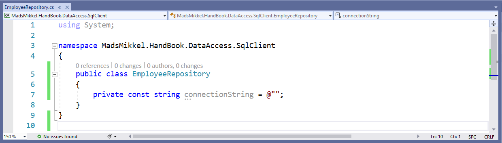Næste skridt er at finde ud af, hvad connection strengen er. Dette gøres ved:
Sæt ind i konstantens værdi:
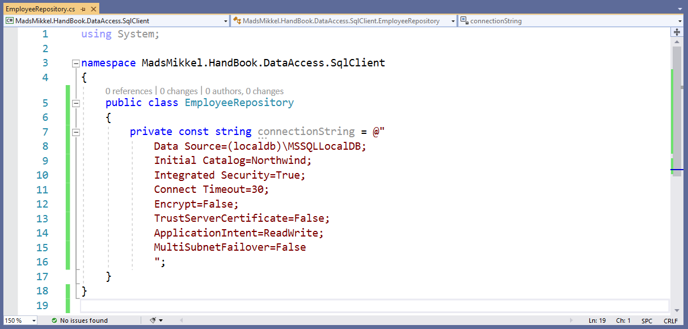Nu skal der laves en klasse der repræsenterer en Northwind ansat i forretningsdomænet:
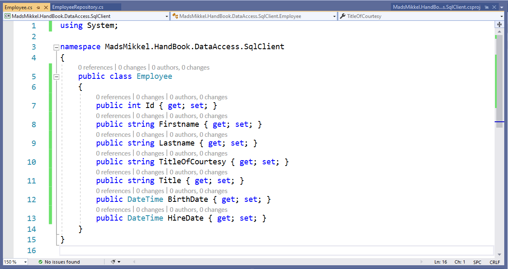Bemærk at ikke alle attributter fra tabellen Employees er medtaget.
Nu skal der laves en metode i EmployeeRepository klassen, der har til ansvar at levere en liste af alle ansatte til kalderen. Start med at erklære metoden:
Der laves en ny tom liste som returneres. Vær opmærksom på to ting: linje 22 bliver til kode, der henter data fra databasen og gemmer det som Employee objekter i listen. Vær også opmærksom på, at hvis der ikke er nogen rækker i Employees tabellen i databasen, returneres en tom liste til kalderen – det genereres derved ikke en fejl, hvis ikke der findes noget i tabellen.
Lav nu det SQL statement der skal eksekveres på databasen:
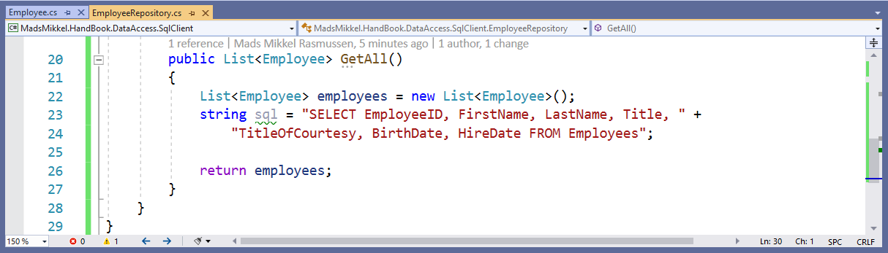For at oprette forbindelse til databasen på serveren, skal der anvendes et objekt af SqlConnection (Husk et using statment øverst i filen til Microsoft/System.Data.SqlClient. Dette objekt skal initialiseres med den konstanten connectionString:
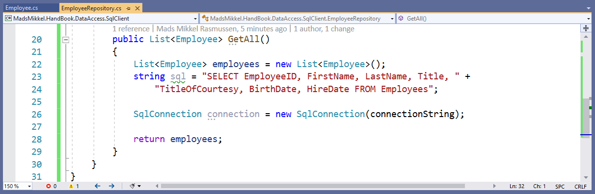Inden forbindelsen åbnes, laves et SqlCommand objekt. Den har til formål at eksekvere et SQL statement over en given forbindelse. Defor skal et SqlCommand objekt initialiseres med både det SQL statement der skal eksekveres, samt SqlConnection objektet:
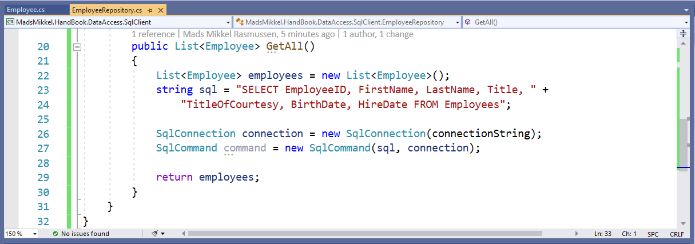Forbindelsen åbnes:
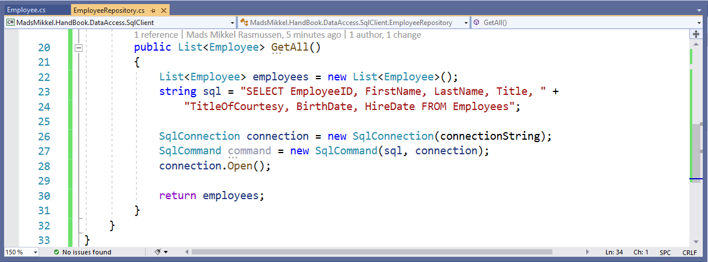For at eksekvere et SQL statement på serveren, skal command.ExecuteReader() kaldes, og denne metode returnerer et SqlDataReader objekt, med de pågældende data fra databasen:
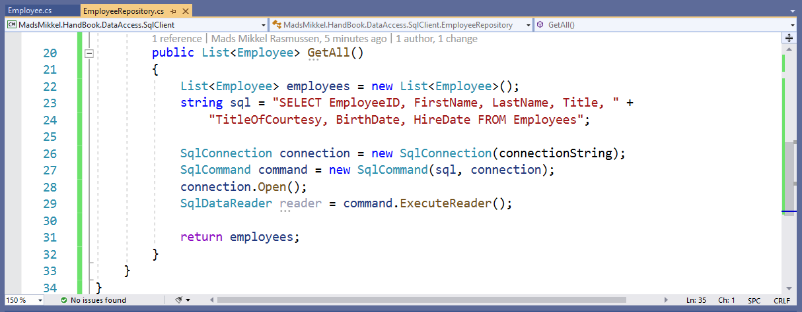Forbindelsen må ikke lukkes før vi er færdige med at lave de returnerede data om til Employee objekter. Der findes flere forskellige måder og her vises to. Til begge måder anvendes en while løkke, hvor betingelsen er at reader.Read() er true. Først ved anvendelse af indexer på reader objektet, hvor argumentet til indexeren er kolonnenavnet:
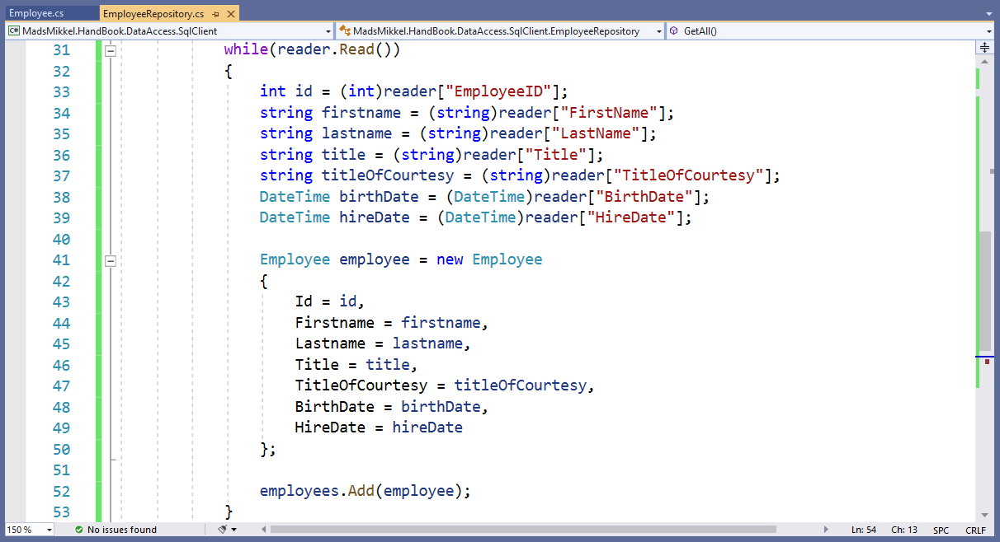Den anden metode benytter sig af GetFieldValue
Nu kan forbindelsen lukkes og listen returneres:
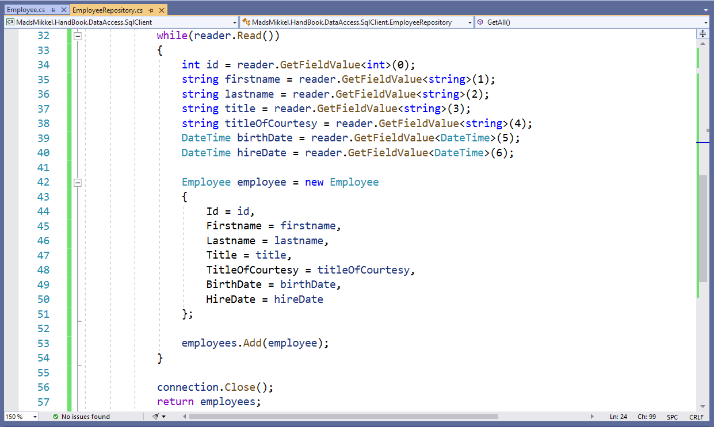SqlClientHer demonstreres det hvordan man ved anvendelse af SqlClient indsætter en ny række i en tabel, eksemplificeret ved en ansat i Northwind databasen:
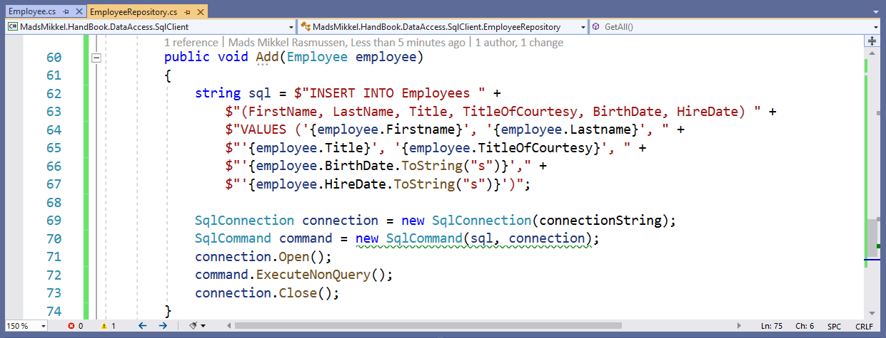Bemærk at samme princip benyttes når der skal oprettes forbindelse og eksekveres et SQL statement. Forskellen er her, at ExecuteNonQuery() kaldes på command objektet. Denne metode skal også kaldes ved UPDATE og DELETE SQL statements. Bemærk også argumentet til ToString metoden på de to DateTime properties, s. Dette argument giver en standard strengformatering af datoen, som SQL Server kan omdanne til en SQL datetime datatype. Når du selv skal lave databaser, så sørg for at benytte SQL datetime2 datatypen i stedet, dette anbefaler Microsoft. Den grønne squiggly under SqlCommand constructoren indikerer blot at der kan forekomme sikkerhedsrisici. Det er OK indtil videre at ignorere dette.
ActiveX Data Objects (ADO.NET) er en teknologi der sørger for en nem måde at kommunikere data frem og tilbage mellem program og database. Teknologien anvender underliggende SqlClient til at indlæse rækker fra tabeller. Disse rækker har typen DataRow og herfra skal man udtrække data til entiteter, på samme måde som SqlClient. En DataRow er en del af et DataTable. Der kan være mange DataRow objekter i et DataTable objekt. Et DataTable er en del af et DataSet. Der kan være mange DataTable objekter i et DataSet.
Det kan godt være lidt uoverskueligt – idéen er at man laver kodegenbrug, ved kun at have én metode der sørger for alle transaktioner med databasen. Denne metode hedder Execute(query) og skal laves i en klasse der hedder Executor:
Klassen Executor har til formål at eksponere forskellige måder at eksekverer forespørgsler (queries) på databasen. Der er kun én måde her, nemlig gennem metoden Execute(). Denne metode modtager et SQL query i en string som argument til parameteren query. I linje 15 og 16 laves hhv. et DataSet objekt og et SqlConnection objekt. Variablen resultSet er central her, da den kommer til at indeholde de returnerede data fra databasen. For at få data i resultSet (linje 20), skal der laves det der står i line 18. Det er ikke vigtigt hvad det betyder, det er derimod vigtigere at man forstår at håndtere et DataSet objekt. Og dette gøre fra et Repository:
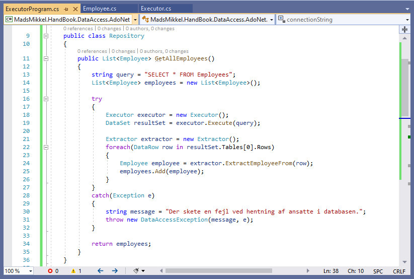Se linje 18 og 19: Her laves et objekt af Executor og Execute metoden kaldes med argumentet, der er en variabel erklæret i linje 13. Når resultSet variablen har fået dens data fra databasen er det gemt i førnævnte DataRows, i et DataTable. For at få data ud af hver DataRow og lave et Employee objekt, benyttes en Extractor:
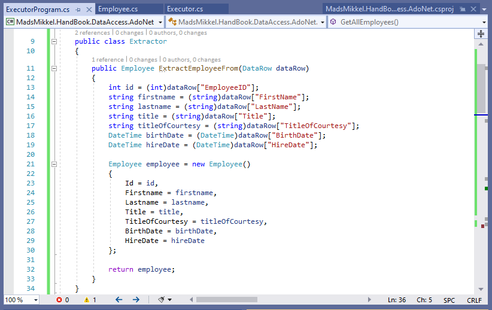Metoden ExtractEmployeeFrom(dataRow) har til formål at udpakke data fra parameteren dataRow, og derefter lave et Employee objekt og returnere det til kalderen – her GetAllEmployees metoden i Repository klassen.
Nu hvor vi anvender kodegenbrug er det ret enkelt at lave funktionalitet til at gemme en ny ansat. Vi laver en metode i Repository klassen der modtager et Employee objekt:
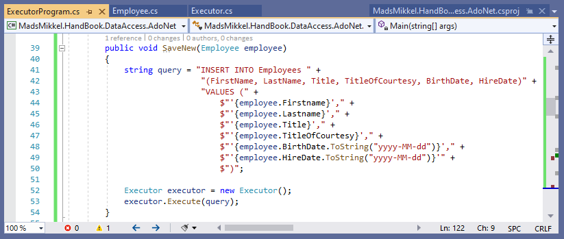Vi ser, at det eneste der laves er et query som blot sendes til Execute metoden på executor objektet. Der bliver returneret et DataSet, men det er ikke nødvendigt at gemme i en variabel, da der kastes en exception fra Fill metoden i Exceute metoden, hvis transaktionen ikke lykkedes.